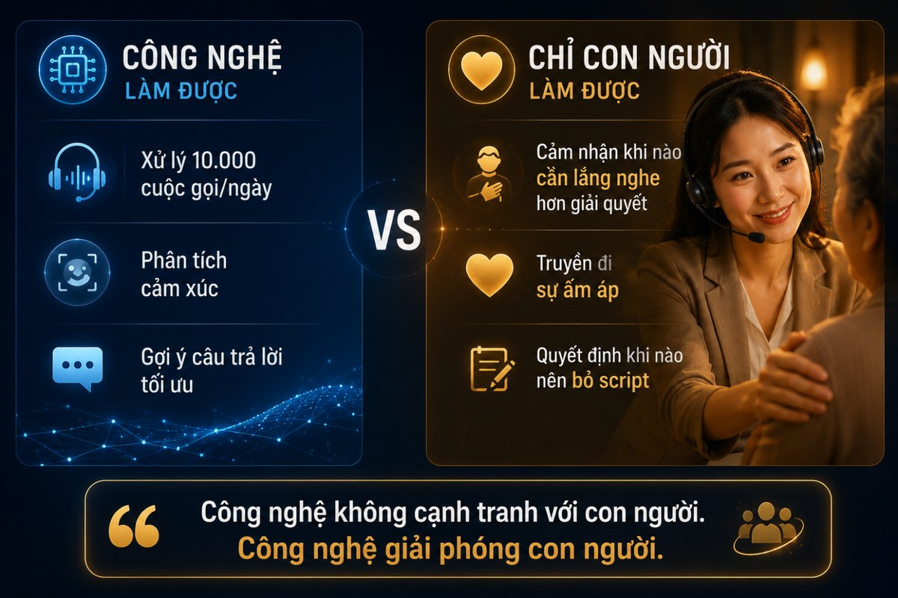

Trang chủ › Blog › Contact Center Insights · Mùa 1
Dữ liệu, AI và tương lai
Bài học lớn nhất từ Contact Center
Hành trình 24 kỳ của series này đã đưa chúng ta đi qua một cuộc viễn chinh thực sự. Từ những chỉ số KPI khô khan, hệ thống CRM phức tạp, ma trận Omnichannel, Speech Analytics cho đến Agentic AI và tầm nhìn Contact Center 2030.
Chúng ta đã bàn rất nhiều về công nghệ. Về cách tối ưu từng giây cuộc gọi để tạo ra giá trị cho các tổ chức tài chính.
Nhưng ở bài cuối này hãy dừng lại một nhịp. Lột bỏ mọi thuật ngữ công nghệ. Và nhìn thẳng vào bản chất cốt lõi của ngành. Điều gì thực sự tạo ra sự khác biệt trong một Contact Center?
23 bài viết. Hàng chục chủ đề. Từ KPI đến Agentic AI. Và câu trả lời sau tất cả vẫn là thứ đơn giản nhất mà nhiều người hay bỏ qua khi bị cuốn vào công nghệ:
Con người.
Để kể cho anh chị nghe một câu chuyện:
Trong một buổi khảo sát tại Contact Center của một ngân hàng lớn có cơ hội ngồi nghe lại một số cuộc gọi được đánh giá cao nhất tháng đó. Một trong số đó là cuộc gọi của một khách hàng lớn tuổi. Bà gọi vào gần cuối giờ làm việc. Giọng run run. Lo lắng vì không hiểu sao tài khoản báo số dư lại bị trừ tiền. Agent nhấc máy. Không đọc script. Không vội vàng xác minh thông tin ngay.
Câu đầu tiên là: "Dạ, bà ơi bà cứ từ từ kể cho con nghe nhé, không sao đâu ạ."
Mười lăm phút sau vấn đề được giải quyết. Chỉ là một khoản phí định kỳ hàng năm bà quên mất.
Nhưng trước khi cúp máy, bà nói: "Cảm ơn con nhiều lắm. Con nói chuyện dễ thương quá, bà yên tâm rồi."
Không một công nghệ nào tạo ra được khoảnh khắc đó.
Và đây là những kịch bản mà công nghệ phải "dừng chân":
Chúng ta đang sống trong kỷ nguyên AI có thể tự động hoàn tiền trong vài phút lúc nửa đêm. Nhưng trong ngành tài chính nơi gắn liền với tiền bạc, tài sản và những rủi ro vô hình cảm xúc của khách hàng là biến số không thuật toán nào giải mã hoàn chỉnh.
Hãy hình dung:
Một người mẹ đang hoảng loạn gọi lên tổng đài vì tài khoản tiết kiệm bỗng dưng báo số dư bằng 0 do lỗi hiển thị. Một người đàn ông đang đứng ở bệnh viện, nghẹn ngào gọi cho tổng đài bảo hiểm vì người thân gặp tai nạn nhưng gặp trục trặc về thủ tục bảo lãnh viện phí.
Trong những khoảnh khắc mà sự bất an, lo lắng và sợ hãi đẩy lên đỉnh điểm thứ khách hàng cần không phải là câu trả lời đúng ngữ pháp từ chatbot.
Thứ họ cần duy nhất lúc đó là một giọng nói con người biết lắng nghe, biết đồng cảm và biết cam kết chịu trách nhiệm.
Bài học lớn nhất học được là gì:
Có một quan niệm phổ biến trong giới công nghệ: "Nếu AI đủ thông minh, nó có thể thay thế mọi thứ." Sau hơn 7 năm làm việc trực tiếp với các Contact Center trong ngành BFSI từ hệ thống IVR cũ kỹ đến Voicebot AI, từ QA thủ công đến Speech Analytics, từ Omnichannel đến Agentic AI Nhận ra một điều không thay đổi:
Công nghệ quyết định tốc độ. Con người quyết định niềm tin.
Và trong ngành tài chính nơi khách hàng gọi đến vào những khoảnh khắc lo lắng nhất, bất an nhất, dễ tổn thương nhất niềm tin quan trọng hơn tốc độ.
Điều công nghệ làm được và điều công nghệ chưa bao giờ làm được:
Công nghệ có thể xử lý 10.000 cuộc gọi mỗi ngày. Nhưng công nghệ không thể cảm nhận được khi nào khách hàng cần được lắng nghe hơn là được giải quyết.
Công nghệ có thể phân tích cảm xúc qua giọng nói. Nhưng công nghệ không thể truyền đi sự ấm áp của câu: "Bà cứ từ từ kể cho con nghe nhé."
Công nghệ có thể gợi ý câu trả lời tối ưu nhất. Nhưng công nghệ không thể quyết định lúc nào nên bỏ script và chỉ là một con người đang lắng nghe một con người khác.
Một agent giỏi trong ngành BFSI không chỉ là người thuộc làu tính năng sản phẩm hay gõ phím nhanh. Họ là những "bác sĩ tâm lý" và người bảo vệ uy tín thương hiệu:
- → Xoa dịu những cái đầu nóng bằng một câu nói thấu cảm đúng thời điểm, biến một cuộc khủng hoảng tiềm ẩn thành sự cảm thông
- → Giải quyết những nút thắt quy trình khi hệ thống báo "lỗi không xác định," chính tư duy phản biện của agent tìm ra lối thoát
- → Kiến tạo sự trung thành tuyệt đối trải nghiệm tích cực từ sự tử tế con người có giá trị gấp trăm lần chương trình khuyến mãi
Công nghệ có thể sao chép logic. Nhưng không bao giờ sao chép được sự thấu cảm, đạo đức và lòng trắc ẩn của con người.
Nhưng đây không phải lý do để bỏ qua công nghệ. Ngược lại.
Công nghệ tốt giúp agent có nhiều thời gian hơn để là con người.
Khi AI lo phần tra cứu thông tin → agent tập trung vào việc lắng nghe.
Khi Voicebot xử lý yêu cầu đơn giản → agent dành năng lượng cho những cuộc gọi thực sự cần cảm xúc.
Khi Speech Analytics phân tích 100% cuộc gọi → Supervisor biết chính xác ai đang cần hỗ trợ và đào tạo thêm.
Công nghệ không cạnh tranh với con người. Công nghệ giải phóng con người.

Tại Minh Phúc Transformation, khi xây dựng hệ sinh thái OmiCX, OmiBot và OmiQC mục tiêu tối thượng chưa bao giờ là "thay thế" agent:
OmiBot được tạo ra để gánh vác những công việc nhàm chán, lặp lại trả lại thời gian và không gian để agent tái tạo năng lượng.
OmiCX được tối ưu để mọi thông tin hiển thị trong 1 giây giúp agent không cuống cuồng tìm kiếm dữ liệu mà toàn tâm lắng nghe khách hàng.
OmiQC được hoàn thiện để ghi nhận khách quan mọi nỗ lực của agent giúp quản lý thấu hiểu và đào tạo đội ngũ tốt hơn mỗi ngày.
Vì chỉ khi agent được hạnh phúc và được giải phóng sức lao động họ mới có thể mang lại trải nghiệm hạnh phúc cho khách hàng.
Và đây là điều muốn gửi đến tất cả những ai đang làm trong ngành Contact Center dù là agent, supervisor, hay giám đốc vận hành:
Giữa tất cả những KPI, dashboard, công nghệ AI và chiến lược chuyển đổi số. Đừng quên rằng ở đầu dây kia là một con người.
Một người đang gọi đến vì họ cần giúp đỡ.
Một người đang tin tưởng rằng sẽ có ai đó lắng nghe họ.
Mỗi cuộc gọi là một cơ hội để tạo ra điều đó.
Và Contact Center dù thế hệ 1 hay thế hệ 4, dù Call Center truyền thống hay Agentic AI đến cuối cùng vẫn là:
Nơi con người giúp đỡ con người.
Đó là bài học lớn nhất. Và cũng là điều không bao giờ thay đổi.
Bài #24 là bài cuối của series Contact Center Insights.
Cảm ơn anh/chị đã đồng hành suốt hành trình 24 kỳ từ bài #1 về sự khác biệt giữa Call Center và Contact Center, qua từng góc nhìn về KPI, CRM, Omnichannel, AI, Revenue Center, cho đến Agentic AI và tầm nhìn 2030.
Tuần tới sẽ có một bài Recap đặc biệt tổng hợp toàn bộ cẩm nang vận hành Contact Center BFSI thành một bức tranh quản trị hoàn chỉnh nhất.
Theo dõi để không bỏ lỡ nhé 🙏
Câu hỏi để khép lại series 👇
Sau 24 kỳ đồng hành. Điều gì hoặc câu chuyện nào khiến anh/chị ấn tượng và thay đổi góc nhìn nhiều nhất về vận hành Contact Center?
Và theo anh/chị yếu tố nào quyết định nhất đến thành công của một Contact Center?
- 🧠 Công nghệ, hệ thống, AI, tích hợp
- 👥 Con người, agent, supervisor, đội ngũ
- ⚙️ Quy trình, vận hành, phối hợp, chuẩn hóa
- 📊 Dữ liệu, insight, phân tích, ra quyết định
- 🔄 Cả bốn, không thể thiếu một
Rất mong được nghe chia sẻ thực tế từ anh/chị để khép lại hành trình này một cách trọn vẹn nhất 👇